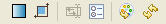

You can use the Design surface in the EGL Rich
UI editor to design an EGL Rich UI application.
To design an EGL Rich UI application in the EGL Rich UI editor,
click the Design tab. Here is the toolbar:

The tools on the Design surface provide the following functionality,
as indicated by the hover help that is displayed when you move the
mouse over a given tool:
- At the left is the Show transparency controls tool,
which is a toggle. Click it to display or hide the transparency tools,
which are described in Setting preferences for EGL Rich UI appearance.
- The second tool is the Show browser size controls tool,
which is also a toggle. Click it to display or hide the scroll bars
that let you specify the browser size within the constraints that
you set in the preferences. Again, further details are in Setting preferences for EGL Rich UI appearance.
- The next tool is the Configure bidirectional options tool,
which is not available in version .7.
- The fourth tool is the Configure preferences tool.
Click it to access the preferences that are described in Setting preferences for EGL Rich UI appearance.
- Second to the right is the Refresh palette tool,
which searches the Workspace for widgets that have the @VEWidget complex
property and then refreshes the palette to reflect the outcome of
that search.
- At the right is the Refresh web page tool.
Click it to refresh the web page, as may be necessary after you change
the widgets in an embedded handler. For an introduction to embedded
handlers, see Creating a Rich UI application with multiple handlers.